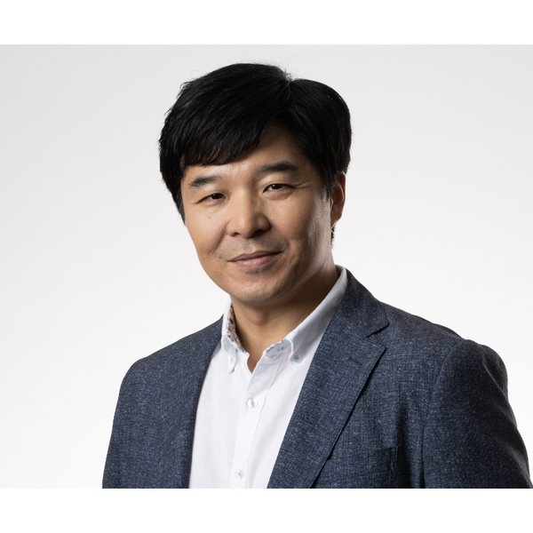

음악의 인지신경과학
Yune Sang Lee, Ph.D.
연구교수 · 서울대학교 뇌영상센터
전산임상과학 연구실 (Computational Clinical Science Lab)

저는 음악이 인간의 인지와 신체 반응에 어떤 영향을 미치는지 연구하며, 그 가능성이 과장되거나 사이비 과학으로 소비되지 않도록 하는 데 관심을 두고 있습니다. 뇌영상과 행동과학을 바탕으로 음악과 사운드가 누구에게, 어떤 상황에서, 어느 정도 유용할 수 있는지를 탐구합니다. 이를 통해 의미 있는 가능성을 사람들이 신뢰할 수 있는 현실의 가치로 연결하고자 합니다.
저는 음악과 리듬, 소리가 인간의 인지와 의사소통, 신체 반응을 어떻게 형성하는지 연구하는 인지신경과학자입니다. 제 연구는 뇌에 관한 근본적인 질문을, 재활과 인지·정서 건강, 일상 기능을 도울 수 있는 근거를 반영한 사운드 응용의 개발로 연결합니다. 최근에는 면밀히 검증된 소리의 원리를 실제 현장에서 평가할 수 있는 도구와 환경으로 옮기는 데 특히 관심을 두고 있습니다.
연세대학교 생물학과(현 시스템생물학과)를 졸업한 뒤, 다트머스대학교에서 인지신경과학 박사학위를 받고 펜실베이니아대학교에서 박사후연구원을 거쳤습니다. 이후 오하이오주립대학교와 텍사스주립대(달라스)에서 9년간 SLAM(Speech, Language, and Music) 연구실을 이끌다가 2025년 서울로 돌아왔습니다. 그동안의 연구는 미국 국립보건원(NIH), 국립과학재단(NSF), 파킨슨재단, 그리고 한국·미국·일본의 산업 파트너로부터 지원을 받았습니다.
대학 시절부터 밴드에서 기타를 연주했고, 졸업 후 광고음악 스튜디오에서 음악감독으로 일했습니다. 그 시절은 연구와 무관한 우회로가 아니라, 이 연구를 하게 된 이유의 대부분입니다.
리듬과 언어가 자원을 공유한다면, 리듬은 언어로 돌아가는 통로가 될 수 있습니다. 실어증 환자를 위한 리듬 게임 치료와 파킨슨병 환자를 위한 드럼·댄스 프로그램을 검증하고, 효과가 있을 때 뇌에서 무엇이 달라지는지 측정합니다.
바이노럴 비트와 몰입형 3D 음향을 비침습적 신경조절 수단으로 활용합니다. 건강한 성인의 문장 이해, 발달성 언어장애 아동, 그리고 경도인지장애·알츠하이머 환자를 대상으로 연구하고 있습니다.
리듬과 말소리를 다루는 능력은 아이가 글을 읽는 방식과 이어져 있습니다. 난독 아동의 읽기 어려움에서 청지각과 리듬 처리가 어떤 몫을 하는지 밝히고, 음운·청각·시각·인지를 함께 재는 검사와 개인별 훈련 설계에 참여합니다. 뇌영상 기법을 통해 난독 아동의 리듬 훈련 효과를 측정합니다.
노년의 음악인은 청력이 더 낫지 않은데도 소음 속 말소리를 더 잘 알아듣습니다. 청력 저하가 치매 위험을 높인다는 점에서, 음악 경험이 인지 예비능을 키워 그 부담을 상쇄하는지가 핵심 질문입니다. 음악 경험이 노년의 뇌에 남기는 흔적을 뇌영상으로 살피고, 음악 훈련이 늦은 나이에도 변화를 만들 수 있는지 검증합니다.
전체 목록은 Google Scholar에서 보실 수 있습니다. Oxford Handbook on Music and the Brain(2019)과 Music Therapy & Music-Based Interventions in Neurology(Springer Nature, 2024)에 단행본 챕터를 저술했습니다.
청각신경과학, 음악 기반 중재, 사운드 테라피의 임상 적용에 관한 공동연구 제안과 강연 문의를 환영합니다. 연구실에 관심 있는 대학원생과 박사후연구원도 편하게 연락 주세요.